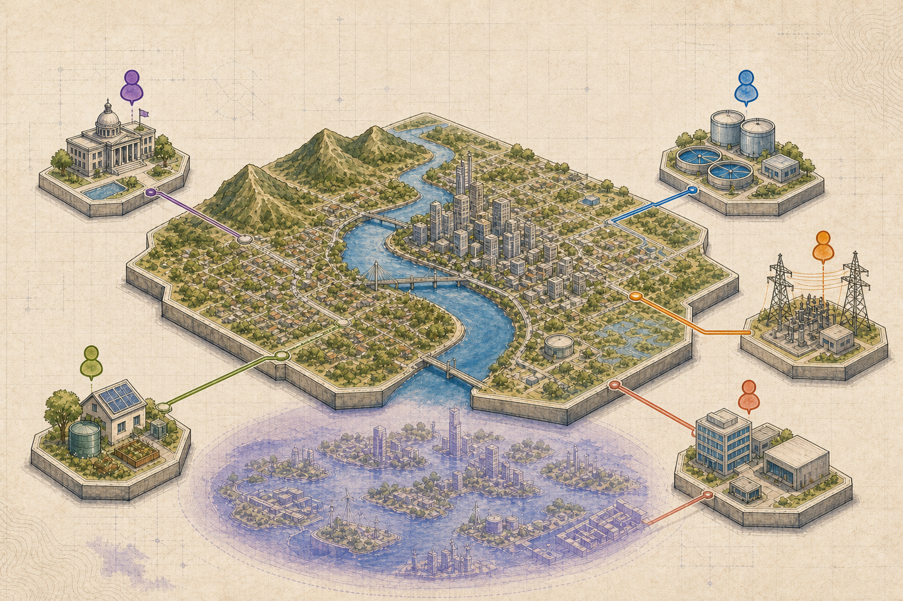

Research / Multiplayer / Unity
ozWaterGame
A server-authoritative simulation platform for five roles, LAN discovery, facility decisions and shared game state.
I build interactive systems, AI developer tools and full-stack applications — from the first model to the working system.
Selected systems, simulations and developer tools — each one a question made executable.
The tools and areas I move between when a problem crosses the boundary between interface and system.
MCP, multi-agent systems, OpenAI Codex, OpenCode, local AI deployment and reliable agent workflows.
React, Next.js, Three.js, React Three Fibre, Unity, Unreal Engine and Zustand.
C++, C, Python, Go, Java, C#, Swift, Assembly, Docker, Linux, databases and APIs.
Vitest, Playwright, Git, TypeDoc, Doxygen and Xcode — with 351 tests on Water Balance Game and 167 on BRIDGE.
Blender, Figma, Open Design, Obsidian, Krita, Quixel Mixer and Comfy.
Software engineering with a bias toward interactive systems, careful abstractions and working prototypes.
I am a Software Engineering student at Adelaide University specialising in interactive systems, AI agents and distributed systems. I enjoy moving between a clear interface, a reliable architecture and the low-level details that make the whole thing work.
Larry YuBuilding an interactive water-security simulation and an MCP-based AI coding-agent extension.
Led initial ozWaterGame development at Adelaide University and handed the architecture to a ten-member team.
Adelaide University / Software & Games Development / GPA 6.60 / 7.00.
Implemented memory management, tracing, mmap files and expanded xv6 file addressing.
Make complexity easier to see and use.
Use working systems and tests to learn.
Keep the next iteration more legible.
Based in Adelaide and interested in interactive systems, AI engineering and software that helps people make better decisions.